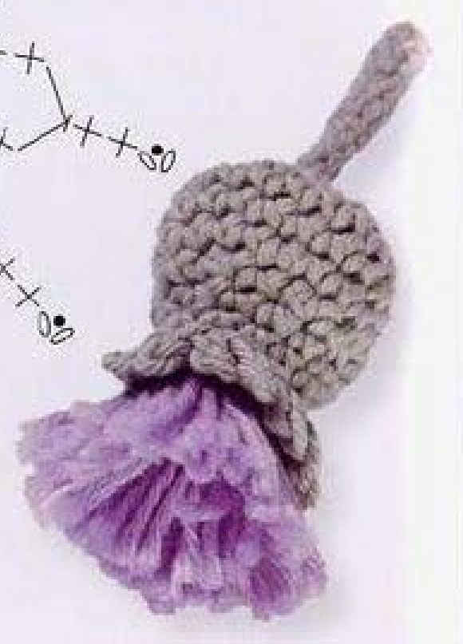
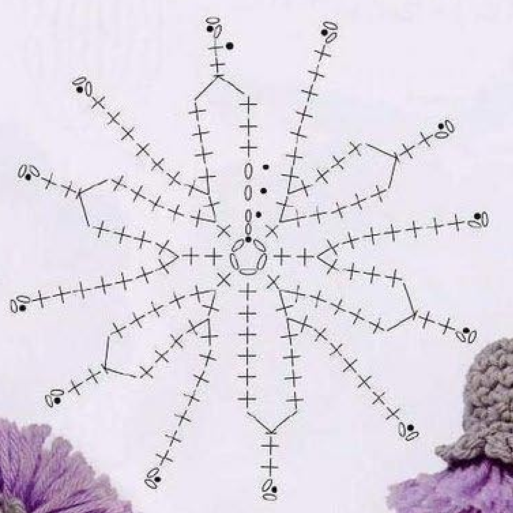
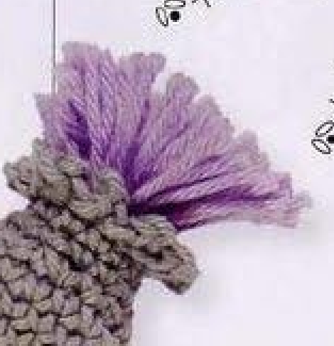
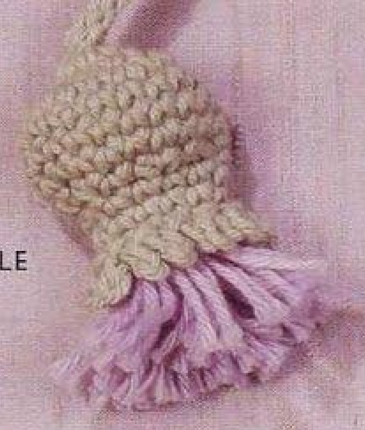

Crochet Scottish Thistle combines a shaped grey-green cotton cup with a pale mauve cut-yarn tassel and a separately made stem. The head expands, holds its width, then narrows before a small picot-like rim is added. This guide follows pattern 61 in Lesley Stanfield’s 100 Flowers to Knit & Crochet, preserving its rounds, yarn crown, and stem return in US crochet terms.

Key Takeaways
- Use 4-ply cotton in grey-green A and pale mauve B.
- The head increases through counts of 8, 12, and 18 stitches.
- Work three continuous plain rounds at eighteen stitches, then decrease to twelve.
- After two further plain rounds, add the two-chain picot rim.
- Cut mauve strands approximately 13 cm, 5 inches, long, fold into a tassel, and insert with spare yarn for padding.
- Make a separate stem with a turned second slip-stitch pass and sew it to the head base.
CROCHET SCOTTISH THISTLE FLOWER PATTERN
Project: One cotton thistle with a crochet head, cut-yarn crown, and sewn stem. This entry is among the book’s intermediate designs. Instructions use US terminology; hook, gauge, quantity, and finished dimensions are not specified.
| Skill level | Intermediate designs in the source. Practical guidance: track continuous rounds, work single-crochet decreases, and assemble a yarn tassel. |
|---|---|
| Base size | One thistle. Finished head, crown, and stem dimensions are not specified. |
| Yarn | 4-ply cotton: grey-green A and pale mauve B. A little spare yarn is used for padding. |
| Quantity, hook, gauge | Not specified. Choose a hook suited to the cotton and assess the head fabric. |
| Notions | Scissors, a blunt needle, and a marker for continuous rounds. |
| US abbreviations | ch = chain; sc = single crochet; sl st = slip stitch; dec = sc2tog across the next 2 stitches; RS = right side. UK dc = US sc. |
| Foundation | With A, ch 5 and join with a slip stitch into a ring. |
| Round 1, RS | Ch 2, work 7 sc in the ring, and sl st to the top chain of the opening ch 2. 8 counted positions. |
| Round 2 | Ch 1; [2 sc in the next sc, 1 sc in the next sc] 3 times; 2 sc in the next sc. Sl st to the starting ch 1. 12 positions. |
| Round 3 | Ch 1; [2 sc in the next sc, 1 sc in the next sc] 5 times; 2 sc in the next sc. Sl st to the starting ch 1. 18 positions. Insert a marker. |
| Rounds 4–6 | Work 3 rounds of sc continuously, without increases or decreases. 18 stitches in each round. |
| Round 7 | [Dec across the next 2 sc, 1 sc in the next sc] 6 times. 12 stitches. |
| Rounds 8–9 | Work 2 plain rounds at 12 stitches, ending with a slip stitch in the next sc. |
| Round 10 | *Ch 2, sl st in the first chain, sl st in the next stitch; repeat from * around, ending with a slip stitch in the first chain. Fasten off invisibly. |
| Tassel top | Cut B strands approximately 13 cm, 5 inches, long, enough to fill the head when doubled. Fold in half and tie into a tassel. Insert the tassel with a little spare yarn for padding. Secure and trim. |
| Stem | With A, ch 12. Skip 1 chain, sl st in the next 11 chains, turn. Ch 1, skip 1 slip stitch, and sl st in a single strand of each remaining slip stitch. Fasten off and sew to the base of the thistle. |
Understand the Cup, Crown, and Stem
The grey-green head is shaped in rounds of single crochet. It begins with joined rounds, increases to eighteen stitches, then continues without joins for several rounds before decreasing. This sequence creates the cup that holds the pale mauve tassel. The crown itself is made from cut strands rather than another crochet round.
The source directs you to fold the mauve strands in half, tie them into a tassel, insert that tassel with a little spare yarn for padding, secure it, and trim. No separate pattern for purple petals is given. The loose yarn ends remain visible above the cup in the finished examples.
The stem is made separately with an initial chain return and a second pass after turning. Its second pass uses a single strand of each remaining slip stitch, a detail that differs from a simple one-pass stem. It is sewn to the base of the completed head after fastening off.
Prepare Cotton, a Marker, and Tassel Yarn
Use grey-green 4-ply cotton as A for the head and stem, and pale mauve 4-ply cotton as B for the crown. Prepare a small amount of spare yarn for the padding specified in the source. The entry does not prescribe a separate commercial stuffing material or a measured padding quantity.
No hook size, numerical gauge, total yardage, or finished measurement is supplied. Choose a hook suited to the cotton and inspect the head fabric as it develops. The stitches should form a usable cup that can hold the inserted tassel while remaining clear enough to count.
Keep a marker for the transition into continuous rounds, scissors for the tassel, and a blunt needle for securing the crown and sewing the stem. The source gives a strand-cutting length of approximately thirteen centimeters, five inches. This is the length before folding and trimming, not a promised finished crown height.
US Singles and the Paired Decrease
The source’s UK double crochet becomes US single crochet. Draw up a loop through the indicated base and draw through both loops on the hook to complete each stitch. The early shared-base increases place two complete singles into one stitch; they do not combine their tops into a cluster.
The paired decrease in round 7 becomes a single-crochet decrease across the next two stitches. Draw up a loop through the first stitch, draw up another through the second, then yarn over and draw through all three loops. Two stitch bases now share one top.
Keep the decrease across adjacent bases, followed by a single in the next base. Repeating that three-base sequence six times consumes all eighteen stitches from the preceding round and produces twelve tops. Putting both partial loops into one base would change the shaping and leave unused stitches.
Decrease checkpoint: Round 7 repeats sc2tog across two bases, then one single in the next base. Six repeats change eighteen stitches into twelve.
Step 1: Make the Eight-Position Starting Round
With A, chain five and join with a slip stitch into a ring. With the right side facing, chain two and work seven US singles into the ring. Join with a slip stitch to the top chain of the opening two-chain rise.
The source states eight stitches for this round: seven actual singles and the counted opening rise. Do not add an eighth actual single because the next increase round expects the seven actual single bases after its opening counted position. The two-chain start is specific to this entry.
Keep the ring and stitch tops accessible. The head is small, so a misplaced join can be hard to spot after several rounds. Identify the opening top chain before continuing, rather than joining into the lower chain or first actual single by habit.
Step 2: Increase to Twelve Positions
Chain one for round 2. Work two singles in the next single and one single in the following single. Repeat that bracketed increase-and-single group three times, then work two singles in the next single. Join with a slip stitch to the starting chain one.
The count is twelve, including the starting counted position. The three repeated groups produce nine actual singles, and the final pair produces two more; the opening rise supplies the remaining position. Keep the final pair separate in your count rather than making a fourth complete bracketed group.
Check the short round before moving on. The increases spread the head evenly, but this is still a joined round. Do not begin continuous spiral work yet or omit the closing slip stitch, because the source makes another joined increase round before inserting its marker.
Step 3: Increase to Eighteen and Mark the Round
Chain one for round 3. Work the two-singles-in-next, one-single-in-following group five times, then two singles in the next single. Join with a slip stitch to the starting chain one. The source count is eighteen positions.
The arithmetic follows the same structure as the previous round: five groups make fifteen actual singles, the final pair adds two, and the counted opening rise makes eighteen. This uses the eleven actual stitch bases after the opening position from round 2.
Insert a marker as directed before the continuous rounds. Use it to identify the round boundary so plain rounds can be counted accurately without adding joins or chain rises. The transition is a construction change, not an instruction to keep repeating the increase round.

Step 4: Work Three Plain Continuous Rounds
Work three rounds of US single crochet continuously at eighteen stitches each. These are rounds 4, 5, and 6. There are no increases, decreases, or new chain rises specified for these rounds. Move the marker as needed to keep the start of each complete circuit identifiable.
Count eighteen stitches around each circuit rather than judging the head’s height by appearance. The cup may start curving as the plain rounds develop. That shape comes from retaining the circumference while adding depth, not from inserting extra decreases before round 7.
The source’s phrase three rounds continuously does not mean three stitches or three more joined increase rounds. Keep the original round sequence visible in the compact card so the decrease follows only after all three plain circuits have been completed.
Plain-round checkpoint: Rounds 4–6 stay at eighteen stitches. The next shaping change is the six-repeat decrease in round 7.
Step 5: Decrease the Head to Twelve Stitches
For round 7, decrease across the next two singles and work one single in the next single. Repeat that bracketed group six times. Each group uses three previous bases and gives two new tops, reducing eighteen to twelve.
Keep all six decreases similar in tension. A very tight decrease can pull one part of the opening inward more strongly than its neighbors, while a loose one can leave a conspicuous gap. Count the completed twelve stitch tops before beginning the following plain rounds.
Do not add a chain between the decrease and the single or work an extra single after the sixth repeat. Those additions would change the twelve-stitch opening. The cup remains open for the later tassel insertion; the source does not close it into a sealed ball.
Step 6: Work Two Plain Rounds and the Picot Rim
Work two plain rounds at twelve stitches, rounds 8 and 9, ending with a slip stitch in the next single. These plain circuits hold the narrowed opening. The finishing slip stitch provides the source transition before the rim round.
For round 10, chain two, slip stitch into the first chain of that pair, then slip stitch into the next stitch of the head. Repeat that sequence around, ending with a slip stitch in the first chain as directed. The little chain pair closes into a small rim point before the next base anchor.
Fasten off invisibly. Keep the rim points visible and avoid tightening the finishing yarn so the head opening collapses. The tassel will be inserted into that opening, so this is not a decrease-to-zero finish or an instruction to sew the whole rim closed.
Finish the Open Cup Before Inserting the Crown
The head increases to eighteen, narrows to twelve, and ends with a small chain-point rim. It remains open for the folded mauve tassel and spare-yarn padding. Complete and check that rim before preparing the crown attachment.
Step 7: Cut and Tie the Mauve Tassel
Cut pale mauve B strands approximately thirteen centimeters, five inches, long. Prepare enough strands to fill the thistle head when doubled. The source gives this practical fill criterion rather than an exact strand number, so do not invent a mandatory count for every yarn thickness.
Fold the strands in half and tie them into a tassel. Keep the folded bundle together so its loose ends form the crown. The finished height will be adjusted by insertion and trimming; it is not simply half the cutting length measured as a guaranteed final dimension.
Compare the bundle with the opening before securing it. A sparse bundle can fail to fill the cup, while an oversized bundle can force the rim outward. The entry’s enough-to-fill instruction is best assessed using the actual completed head and the chosen cotton.
Step 8: Insert, Pad, Secure, and Trim the Crown
Insert the folded tassel into the head along with a little spare yarn for padding. Retain the grey-green cup shape and let the loose mauve strands emerge from its rim. The source does not call for a separate purple crocheted cap, flower petal ring, or rounded pompom.
Secure the tassel, then trim it. Use the finished source photograph as a guide to the visible crown rather than cutting it to an invented exact height. Keep the strands recognizable as a loose tassel and avoid trimming so close to the rim that the tied bundle becomes exposed.
Inspect the crown attachment with gentle handling before finishing the last ends. The entry does not specify a sewing stitch count, so use stable connections and confirm that the bundle will stay seated. The spare yarn supports the shape but does not replace a secure tassel attachment.

Step 9: Make the Separate Two-Pass Stem
With A, chain twelve. Skip one chain and slip stitch into each of the next eleven chains. Turn the work, chain one, and skip one slip stitch. Then slip stitch in a single strand of each remaining slip stitch, following the source’s second-pass placement.
The second pass is not another row into the original foundation chains, and it does not use both strands of each slip-stitch top. Keep the single-strand route clear as you work. After skipping one of the eleven return slip stitches, ten remain for this pass.
Fasten off and sew the stem to the base of the thistle. Position it so the grey-green cup and mauve crown remain distinct from the narrow stem. The source has no leaf or additional side branch in this stem recipe.

Troubleshoot Head Counts and Crown Placement
The cup is too wide at the top
Check that round 7 used six paired decreases and six singles, producing twelve stitch tops. Extra chains or missed decreases can retain more of the eighteen-stitch circumference. Review the count before changing the tassel bundle to fill a head made with different shaping.
The crown looks like crocheted petals
The pale mauve top is made from cut yarn strands folded and tied as a tassel. No purple stitch pattern is supplied for it. Preserve the loose yarn crown and recognize any crocheted replacement top as an adaptation rather than the original Scottish Thistle construction.
The stem is too narrow or unfinished
Check the turned second pass after the eleven initial return slip stitches. It begins with one chain, skips one slip stitch, and uses single strands of the remaining stitches. Omitting that pass leaves a different one-row stem even if the twelve-chain start was correct.
Optional Shades, Sizing, and Decorative Uses
Different grey-green or mauve shades can be optional color choices while retaining the cotton cup and cut-yarn crown. Changing yarn thickness or hook affects the head and stem dimensions, but the source gives no graded sizes or gauge formula. Make a sample cup and assess tassel fill with the actual yarn.
Suggested decorative uses include a small thistle applique on a textile panel or handmade accessory. These are additional application ideas rather than separate projects in the entry. Position the finished motif before sewing and attach through stable back or base stitches, leaving the crown strands free to show their texture.
Variation guidance: Extra leaves, a crocheted purple crown, another stuffing material, or altered round counts are adaptations. Keep the original cup, spare-yarn padding, tassel, and two-pass stem recipe clear.
Scottish Thistle at a Glance
- Grey-green and pale mauve 4-ply cotton.
- Head counts rise through eight, twelve, and eighteen.
- Three plain rounds, a decrease to twelve, then two plain rounds and a picot rim.
- Mauve strands cut approximately thirteen centimeters, folded, tied, inserted, secured, and trimmed.
- Separate turned two-pass stem sewn to the head base.
Conclusion
Scottish Thistle depends on both its counted cup rounds and its cut-yarn finishing. Track the continuous circuits, keep the opening at twelve after decreasing, and secure the tassel before trimming. The compact card contains the complete source recipe in US terms, while the chart clarifies the head route. Click the Pin to return to the pattern when you are ready to make the thistle.
Source and Tags
Source: Lesley Stanfield, 100 Flowers to Knit & Crochet, pattern 61 Scottish Thistle. Instructions, head chart, and finished examples are on printed page 78, PDF page 72; the directory view is on printed page 28, PDF page 23. Some source photographs are cut off at scan edges, and the complete instruction-page example is oriented with the stem upward. These are finished-work images, not progress photographs. The recipe is translated into US terminology, with added practical guidance identified separately.
Scottish ThistleCrochet Cotton CupMauve TasselContinuous RoundsTwo-Pass StemUS Crochet Terms